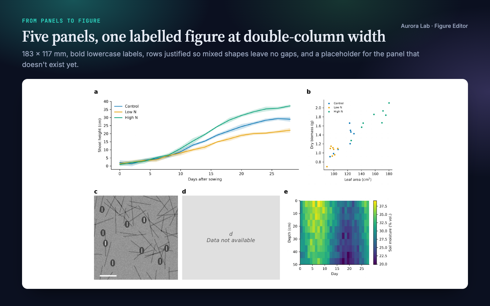
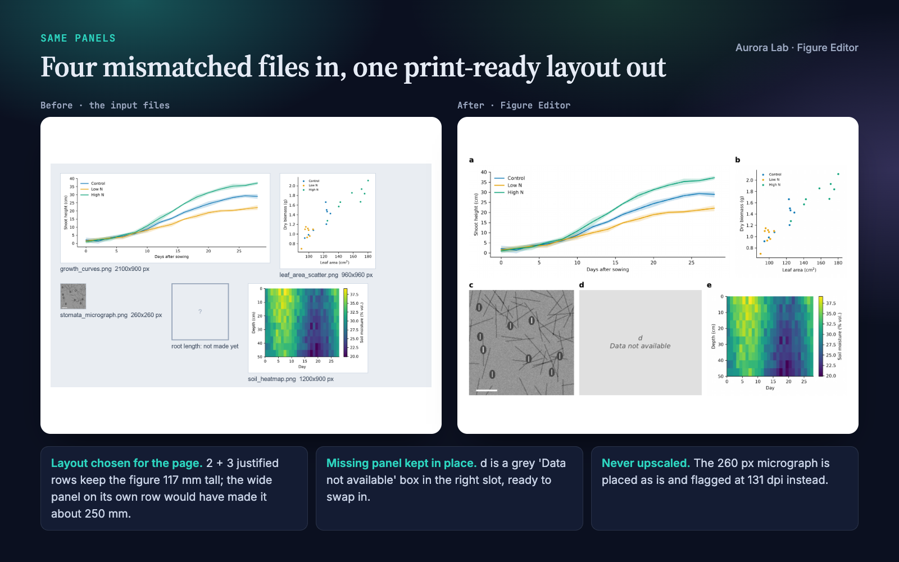
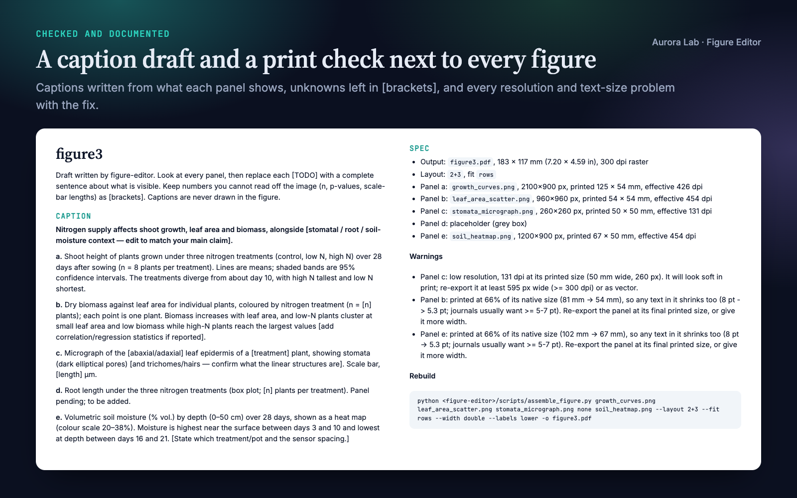
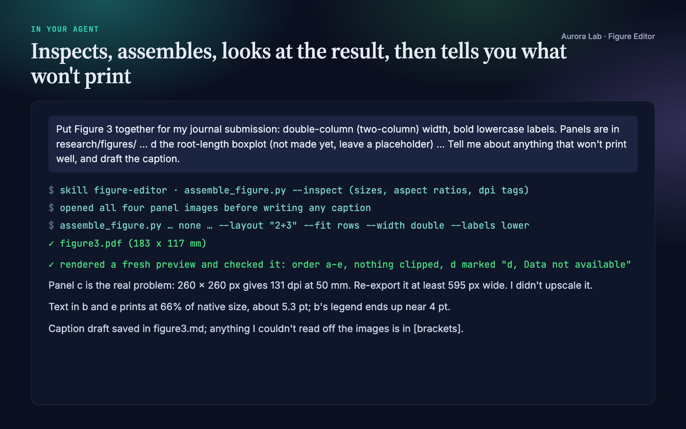

Overview
The last step before submission is often the fiddliest: five panels exported from three scripts and a microscope, all at different sizes, that have to become one figure at exactly 183 mm wide with matching labels. Figure Editor turns your agent into a careful figure assembler that:
- Inspects before it proposes. Pixel size, aspect ratio and DPI tag of every panel, then a layout suggestion with its reason.
- Lays panels out for the page. Grids, rows, spanning panels, and justified rows that give mixed portrait and landscape panels one height per row with no gaps.
- Prints at an exact width, so the label size you ask for is the size that gets printed.
- Keeps a slot for missing panels: a grey "Data not available" box in the right place.
- Checks print resolution and shrinking text, and says exactly how many pixels each weak panel needs. It never upscales.
- Drafts the caption after looking at every panel, leaving what it can't see in [brackets].
Figure Editor or Paper Figures? Paper Figures designs and draws figures from your data. Figure Editor assembles images that already exist (plots, micrographs, gels, diagrams, panels made by Paper Figures or anything else) into one labelled multi-panel figure. Each works on its own; they pair well.
Quick start
- Get the skill from Agensi and add it to your agent (Claude Code, Codex CLI, Cursor, Gemini CLI or any agent that loads SKILL.md skills).
- Have Python 3.10+ with matplotlib, Pillow and numpy in the project's environment. The
panelkitlibrary ships inside the skill. - Ask in plain words.
Example requests:
- "Put research/figures/a.png, b.png and c.png into one figure. No layout preference."
- "Make a 2x2 figure from these four images for a single-column slot, lowercase labels."
- "Assemble Figure 3; panel B isn't ready yet, leave a placeholder."
- "Why does panel C look blurry in my assembled figure?"
Reading layout names. Grids are columns x rows: 2x1 grid puts two panels side by side, 1x2 grid stacks them vertically, 3x2 grid is three across and two down. N+M strings give the number of panels in each row: 1+2 is one full-width panel on top and two below.
What you get
The figure, the caption and spec file and the session excerpt come from a real run: a fresh agent session with only this skill installed. It was given four synthetic panel images of different sizes (one deliberately low resolution, one panel missing) and the request shown in the session card. The figure is a PNG render of the PDF it wrote. The "before" image is our own illustration of the input files at their relative pixel sizes.




How it works
- Intake. One message with two questions: which images, in which order, and whether you have a layout, width and label style in mind. If you describe a panel instead of giving a path, the agent asks which file it is; it never guesses a path.
- Inspect.
assemble_figure.py --inspectprints each panel's size, aspect ratio and DPI tag and a suggested layout. The agent explains its proposal, and if one would make the figure too tall for a page it says so and proposes another (in the demo: 117 mm instead of 253 mm). - Placeholders. A missing panel becomes a grey box labelled with its letter, in its slot. The agent says so, and reminds you to replace it.
- Assemble. One command writes the figure at the exact width, with labels at true print size. PDF output embeds each raster panel without resampling.
- Look, then report. The agent opens a freshly rendered preview to check order, labels, clipping and stretching, then explains every warning in plain language with the fix.
- Caption. It opens every panel image, fills the caption draft with complete sentences about what is visible, and reuses any
<panel>.mdcaption notes found next to an image.
Layouts
| Layout string | Result |
|---|---|
2x2 grid |
2 columns x 2 rows, filled left to right, top to bottom |
2x1 grid / 1x2 grid |
two side by side / two stacked |
1+2, 2+3, 1+2+3 |
panels per row; widths divide evenly |
3x2 grid Panel A full width |
panel A spans the top row; the rest flow around it |
--fit rows |
justified rows: one height per row, widths follow each panel's shape |
Checks it runs
| Warning | What it means |
|---|---|
| Low resolution | The panel's effective dpi at its printed size is below the threshold (300 by default, --min-dpi to change). The warning gives the pixel width needed. |
| Printed at N% of native size | The panel was shrunk to fit, so its own text and lines shrink too (8 pt at 66% is about 5.3 pt). |
| DPI metadata differs | Panels were exported with inconsistent settings. Usually harmless on its own. |
| 16-bit image scaled to 8-bit | Display contrast was set from the data's range. |
| Vector panel rasterised | PDF/SVG panels become pixels (600 dpi) in the assembly. |
| Figure is N mm tall | Taller than most journal pages allow (about 240 mm). |
The resolution, text-size and height checks are automatic. Choosing the layout, checking the preview and writing the caption are steps the agent carries out and reports.
Files it reads and writes
| Path | |
|---|---|
| Reads | the image files you name (PNG, TIFF, JPEG, PDF, SVG), e.g. in research/figures/, and any <panel>.md caption note next to them |
| Writes | the figure you name (.pdf recommended; .png, .tif, .svg, .eps, .jpg also work) and its caption draft <name>.md in research/figures/ |
| Elsewhere | outside research/figures/ the draft is <name>_captions.md next to the figure |
It never modifies, moves or overwrites an input image (it refuses to write over one), and never overwrites an existing caption draft unless asked, so your edits survive a rebuild. The caption draft also records each panel's printed size and effective dpi, every warning, and the exact command to rebuild the figure.
Command line and Python API
python figure-editor/scripts/assemble_figure.py --inspect a.png b.tif c.png
python figure-editor/scripts/assemble_figure.py a.png b.tif none d.png \
--layout "2x2 grid" --width double --labels lower -o research/figures/fig1.pdf
| Option | Purpose |
|---|---|
--layout |
grid, rows or spanning layout (see above); omitted = automatic |
--fit |
grid (aligned columns) or rows (justified rows for mixed shapes) |
--width |
single (89 mm), onehalf (120 mm), double (183 mm, default), or e.g. 180mm, 7in |
--labels |
upper (A, B), lower (a, b), plain or none |
--font-size |
label size in pt at printed size (default 10) |
--dpi, --min-dpi |
raster output resolution; resolution warning threshold (both default 300) |
none |
in place of a path: a placeholder panel |
For a re-runnable script, the bundled panelkit library exposes the same steps:
| Function or class | Purpose |
|---|---|
get_image_dims(paths) |
pixel size of each panel |
suggest_layout(dims) |
a layout, fit mode and the reason, to discuss with you |
assemble(images=…, layout=…, output=…, width=…) |
builds the figure and returns sizes, effective dpi and warnings per panel |
Panel(image, label, colspan, rowspan, caption) |
per-panel spans, custom labels and draft captions |
write_caption_draft(result) |
writes the caption draft and spec; never overwrites unless asked |
Optional: PDF and SVG panels
PNG, TIFF (including 16-bit and multi-page) and JPEG panels work out of the box. PDF and SVG panels are rasterised at 600 dpi, which needs one optional tool: the pymupdf package (PDF and SVG), or poppler's pdftoppm command (PDF only). Without either, the panel becomes a placeholder with a warning and the agent asks you to export it as PNG or TIFF. Because these panels become pixels, an assembled figure is not fully vector; if your venue wants vector line art, assemble the original vector panels in a vector editor or LaTeX.
Journal sizes
The skill carries a reference table it reads when you name a venue. These values were checked against the publishers' own artwork pages in October 2026:
| Publisher | Widths (single · 1.5 · double) | Resolution at final size |
|---|---|---|
| Nature | 89 · 120–136 · 183 mm | photos ≥ 300 dpi; line art as vector |
| Elsevier | 90 · 140 · 190 mm | 300 / 500 / 1000 dpi (halftone / combination / line art) |
| IEEE | 88.9 · – · 182 mm | > 300 dpi colour/greyscale, > 600 dpi line art |
Cell Press and PNAS are listed with commonly quoted values (about 85 mm single and 174–178 mm double column). Journals within a publisher can differ and guides change, so confirm against your venue's current author guidelines before submission.
The research/ folder
Figure Editor works on its own. If you keep your project in a research/ folder, it uses the same plain-file convention as the other Aurora Lab research skills, so they cooperate without calling each other. Panels in research/figures/ (with an optional <panel>.md caption note from whatever made the panel) go in, and the assembled figure and its caption draft come out in the same folder.
FAQ
How is this different from Paper Figures?
Paper Figures designs and draws figures from your data. Figure Editor assembles finished images into one multi-panel figure with layout, labels, placeholders, resolution checks and a caption draft. They work well together, but neither needs the other.
What do I need installed?
Python 3.10+ with matplotlib, Pillow and numpy. Optionally pymupdf or poppler's pdftoppm for PDF/SVG panels. No network access.
Will it fix a blurry panel?
No. It reports the panel's effective dpi and the pixel width it needs, and suggests re-exporting from the source. Upscaling adds no detail, so it never does it.
Does it check against my journal's rules?
It checks resolution, shrinking text and figure height automatically, with an adjustable threshold. The reference table covers Nature, Elsevier and IEEE plus typical values for others. Confirm with your journal's current guidelines.
Can I change the figure later?
Yes. The caption draft records the rebuild command. Replace a file, or swap none for the finished panel, and run it again; your caption edits are kept.
Do I need the other Aurora Lab skills?
No. They share the research/ folder convention if you want to use them together.
Limitations
- It assembles existing images. It does not make plots from data, edit pixels inside a panel, or invent content for a missing panel.
- PDF and SVG panels are rasterised at 600 dpi, so the result is not fully vector. They also need PyMuPDF or poppler's
pdftoppm. - Journal values are a starting point; confirm against your venue's current author guidelines.
- The caption is a draft for you to complete: details that are not visible in the images stay in [brackets].
Changelog
1.0.0 · October 2026 · First release.